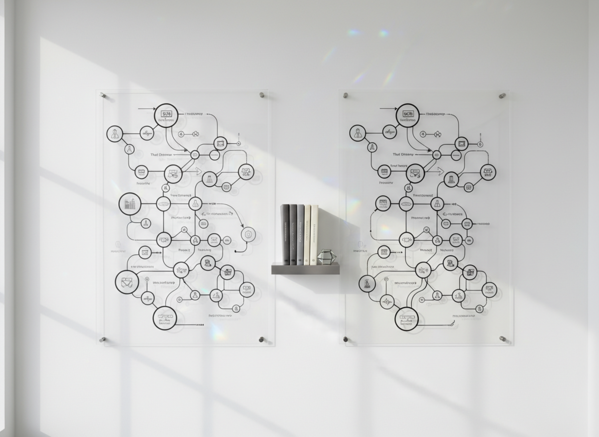

戰略設計 × 實裝
構想不止於提案，而是落實到執行路線與成果轉換。
台日商務・觀光・物流・拓展日本市場
決策的關鍵在於「結構」，而非「論點」。SynerSeed 藉由建構「比較維度」與「評判準則」，實現從決策到執行的無縫銜接。
ABOUT
SynerSeed 重視的不是短期交易，而是成為連接雙方企業信任的長期合作橋梁。在信任的基礎上，透過雙方人脈，持續拓展當地市場與全國性機會。
SERVICES / SOLUTIONS
不只是提出構想，而是建立比較維度、評判標準與執行順序，讓決策能真正向前推進。
構想不止於提案，而是落實到執行路線與成果轉換。

以介紹文化與協業結構為前提，設計信任能連鎖的合作模式。

明確市場切入口、優先順位與實裝路線圖，讓機會具體化。
整合比較軸與判斷基準，提高初回商談到結論推進的確度。
CASE STUDY
SynerSeed 重視的不是短期交易，而是成為連接雙方企業信任的長期合作橋梁。在信任的基礎上，透過雙方人脈，持續拓展當地市場與全國性機會。

LOGISTICS
在國際物流與冷鏈輸送領域，透過長期信任與穩定協作，協助客戶維持具競爭力的成本結構。

PARTNERSHIP
透過北海道租車合作經驗，將單一事業成果延伸為介紹、信任與跨業協作的新機會。
LEADERSHIP
CEO / Cross-border Business Partner
Sandy Lin 長期參與台日跨境合作、商務拓展、觀光與租車預約合作，以及商品與台日中英等國物流相關業務推進。
關於日本商務，Sandy 的不同之處在於超過 20 年與日本企業及高階經營者的談判接洽經驗，能以專業理解與建議，發揮企業強項，拉近雙方距離，形成雙贏合作。
顧問的工作不是翻譯，而是運用日本思維的溝通方式，理解每一句話背後真正的商務意義，創造更高品質的雙贏談判價值。
SynerSeed 堅持每一種產業或商品只服務一家公司，避免競業疑慮。這不是上下關係的顧問外包，而是深層且重要的 B2B Partnership。
CONTACT
針對台日商務合作、物流服務、觀光合作與拓展日本市場需求，歡迎來信洽詢。
sandylin@synerseed.com